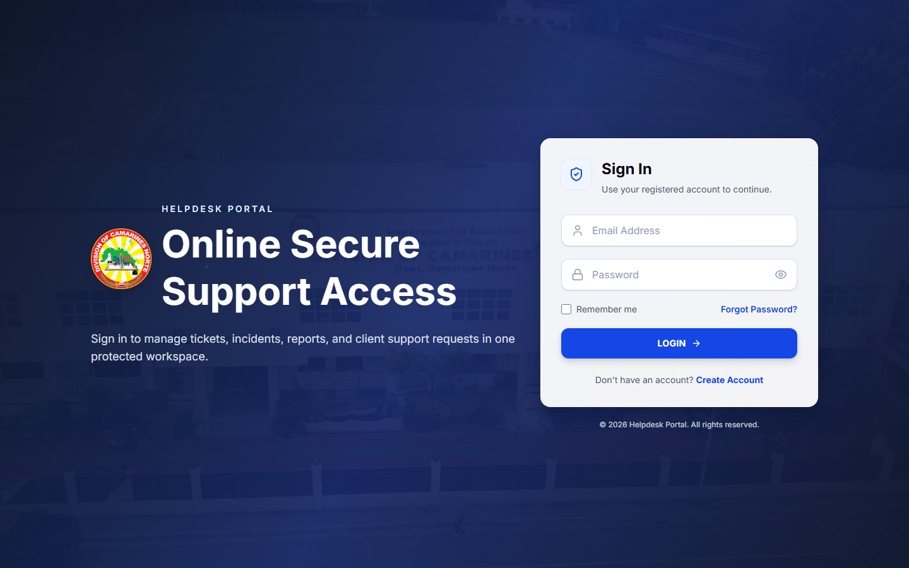
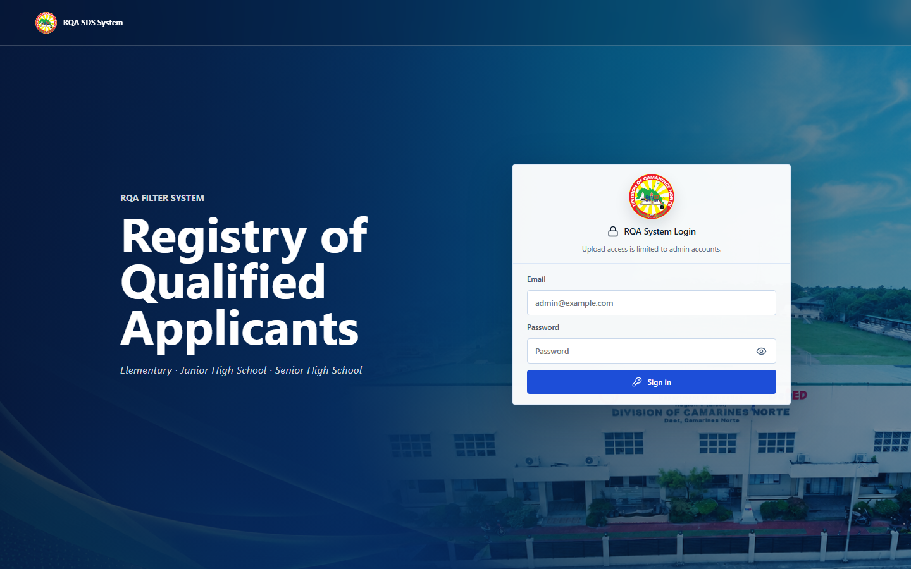

Smart Ticketing Website
Built an early end-to-end ticketing platform focused on event workflows, seat selection, and digital confirmations.
Complete portfolio
A timeline of the systems I designed and developed—from early academic platforms to current digital services for the Schools Division Office of Camarines Norte.
Explore all projects ↓Development journey
Built an early end-to-end ticketing platform focused on event workflows, seat selection, and digital confirmations.
Expanded into real-time monitoring and tourism-focused experiences, strengthening dashboard, mapping, and multimedia skills.
Developed a full-stack operations system for centralized resource assignment, availability tracking, and reporting.
Delivered two current-year SDO platforms for technical assistance management and data-driven teacher applicant appointment.
Selected systems
Six digital products shaped by practical workflows, thoughtful interfaces, and dependable implementation.

A web-based technical assistance tracking and feedback mechanism for SDO personnel and schools, learning centers, and offices. It automatically generates validated Digital Technical Assistance Tickets, emails them to TA providers, and centralizes Division-wide analytics.

A web-based system for the Schools Division Superintendent to view, filter, and appoint qualified teacher applicants. It automates filtering and report generation while presenting narrative data through a focused dashboard.
.png)
A centralized application for assigning, monitoring, and reporting organizational resources in real time, supporting better planning, availability tracking, and accountability.
.png)
A vibrant platform showcasing Camarines Norte festivals, events, galleries, and tourist destinations through a responsive and interactive visitor experience.
.png)
A monitoring system for fish-farm conditions and health metrics, combining data visualization, automated alerts, and operational reporting tools.

A ticketing platform that streamlines event management and sales through seat selection, secure transaction workflows, and automated email confirmations.